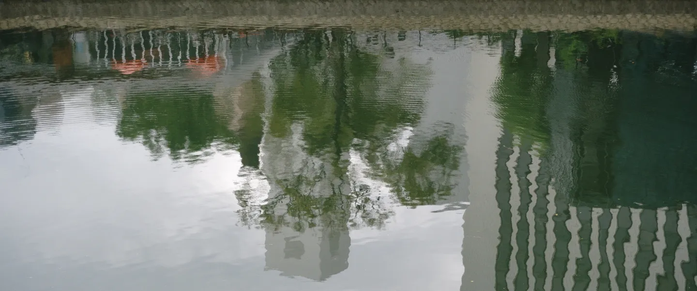

Kōta
学部卒業制作では、ビルのガラス窓に映る空をタイムラプスで記録する《Metedscapes》（2023）を制作。
卒業後は大学院へ進学。修了研究では、現代社会において曖昧さを再評価する概念としての「窓」として、新たな概念である“Fenestralism”を構築した。
現在は「窓」や「曖昧さ」を題材に写真の撮影および研究活動を行っている。
窓鳥 / MADORI について
外界と内界をつなぐ「窓」と、空から全体を見渡す「鳥」。
「窓鳥（MADORI）」という名前には、ミクロとマクロの視点を行き来しながらものづくりに向き合う姿勢を込めています。
何もない空間に「間取り」を描き出すように、写真やデザインを通じて新たな視点の枠組みを形にしていきます。
経歴
- 2024 九州産業大学 芸術学部 ソーシャルデザイン学科 卒業
- 2026 九州産業大学大学院 芸術研究科 造形表現専攻 修了
Born in Fukuoka. For his undergraduate graduation project, he created "Mutedscapes" (2023), a time-lapse recording of the sky reflected in building glass windows. He then pursued graduate studies, where his master's research established "Fenestralism" (2026) — a new concept that reevaluates the idea of "windows" as a way to embrace ambiguity in modern society. Currently, he is actively engaged in photography and research centered on the themes of "windows" and "ambiguity."